Orange/Caraibes
Fournisseur de telecommunication · Jarry & Moudong, Guadeloupe · 2024
L'entreprise
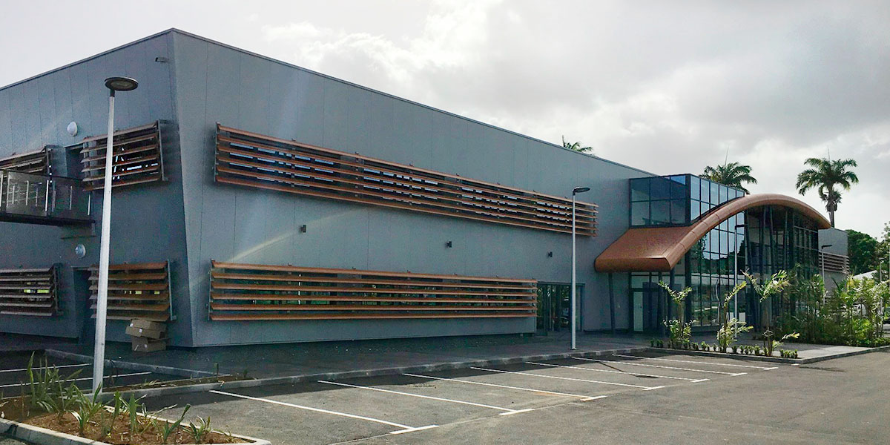
Orange Caraibes — Bureaux Jarry, Guadeloupe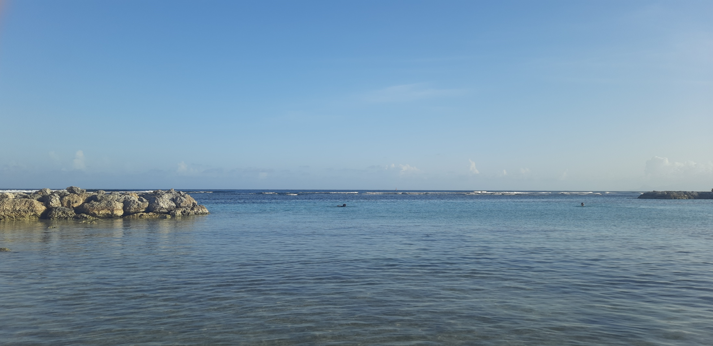
Plage de Sainte-Anne — GuadeloupeL'équipe TSP (Technology Service Provider) fournit les services informatiques aux employés d'Orange Caraibes : déploiement de postes, support utilisateurs et maintenance hardware sur l'ensemble du réseau LAN/WLAN de l'entreprise.
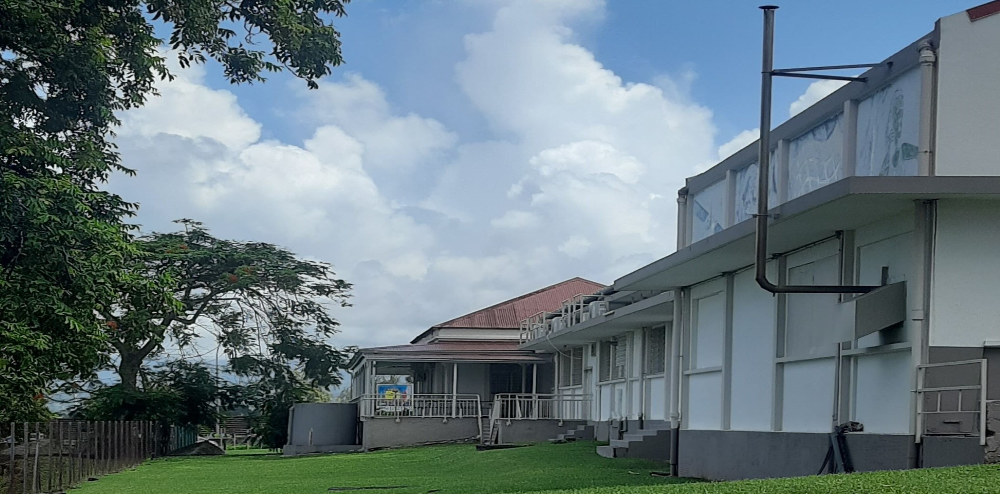
Local TSP — La Jaille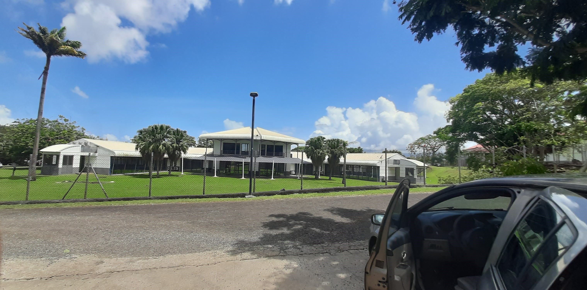
Site Orange de La JailleMise en place de nouveaux postes
- Réception et inventaire des nouveaux PC
- Formatage via le logiciel interne e-buro + installation des logiciels métiers
- Intégration au réseau Orange Caraibes
- Configuration date, profils et accès
- Livraison aux salariés (solo ou avec tuteur)
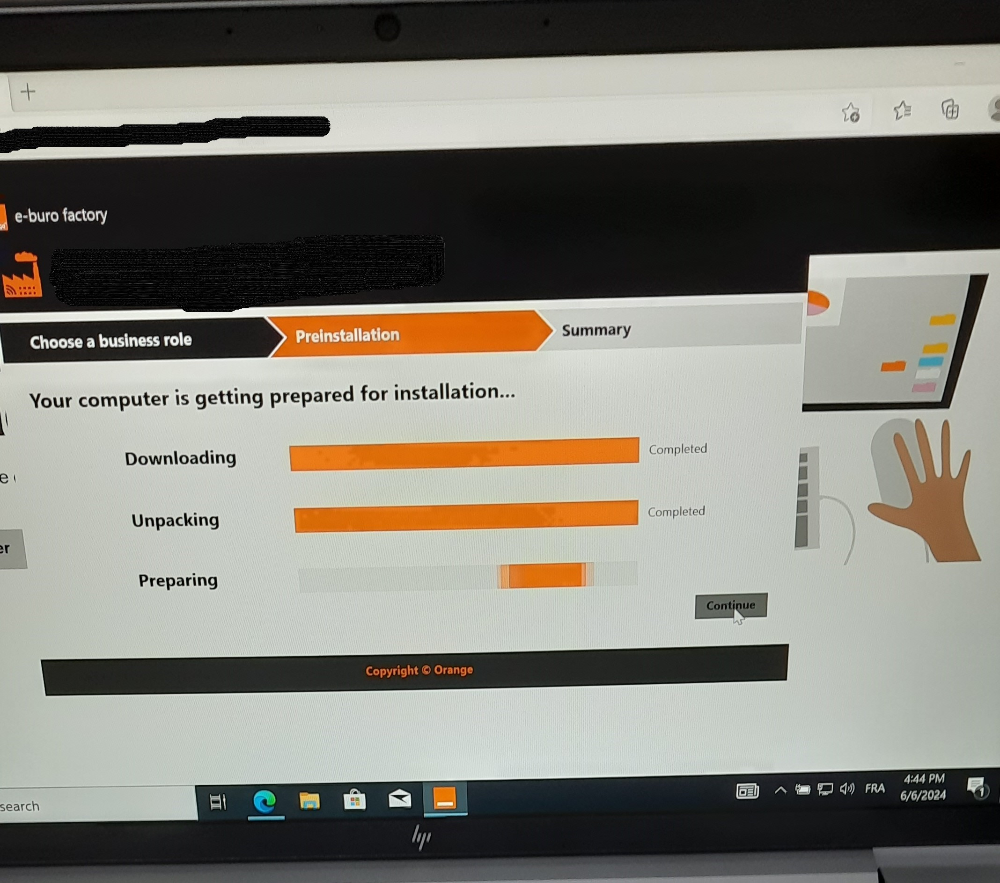
Application e-buro factory OrangeSupport utilisateurs
Prise en charge des salariés venant au local avec des postes défectueux. Diagnostic du problème via échange avec l'utilisateur, identification de la cause et résolution directe ou planification d'une réparation.
Demontage & reparations hardware
Remplacement de composants défaillants (batteries gonflées, disques durs morts) à partir du stock de pièces disponibles dans le local TSP.
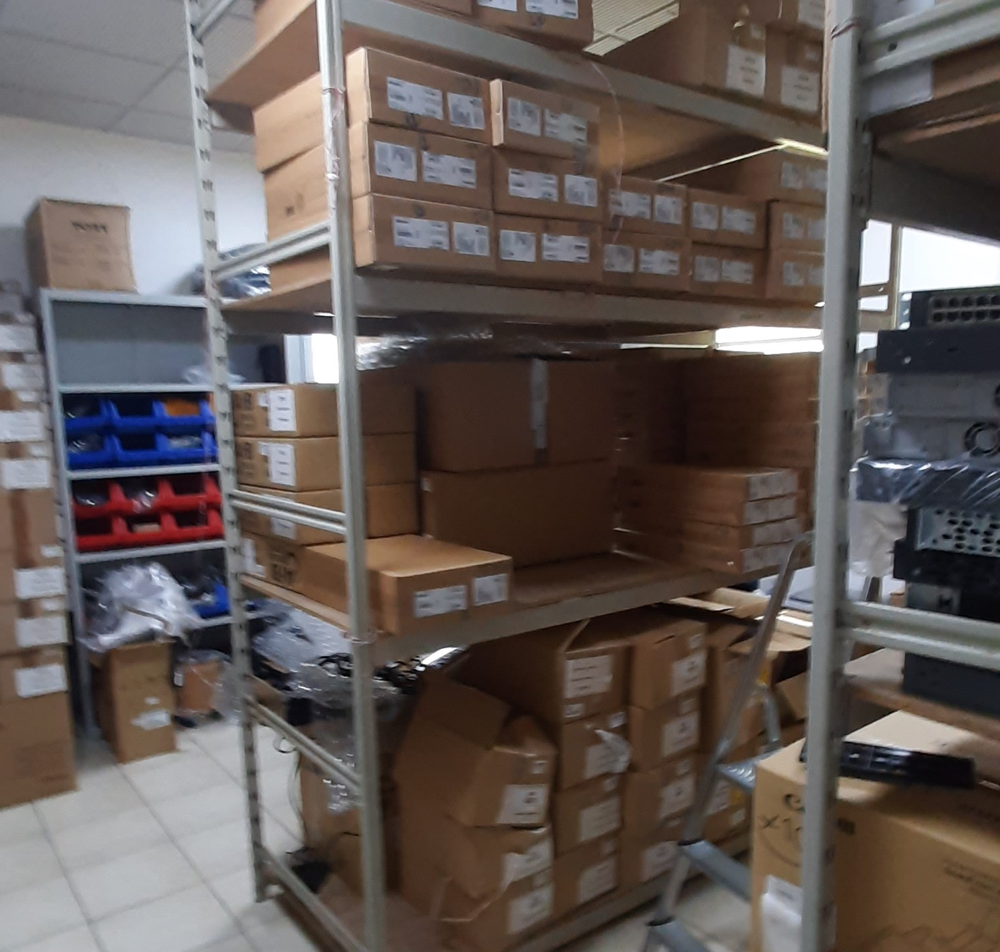
Stock du service TSP — La JailleInterventions en boutiques
- Remplacement de bornes fixes par des bornes mobiles
- Installation de bornes et tablettes d'achat en boutique
- Diagnostic et résolution de problèmes sur place
 Boutique Orange de Jarry
Boutique Orange de Jarry
 Boutique Destrelland
Boutique Destrelland
Mise en place du nouveau local — Basse-Terre
Assistance à l'installation du réseau du nouveau local situé au sud de la Guadeloupe : câblage, configuration des équipements réseau (switches, modems) et intégration au SI d'Orange Caraibes.
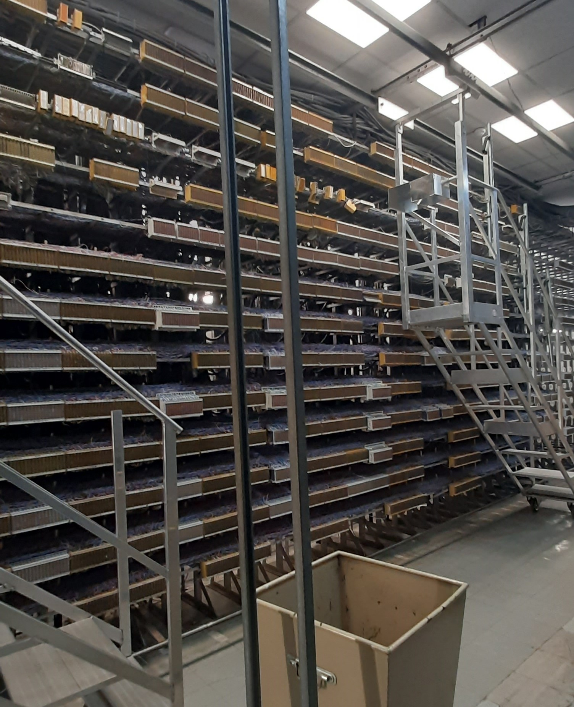
Repartiteur & arrivee cable sous-marin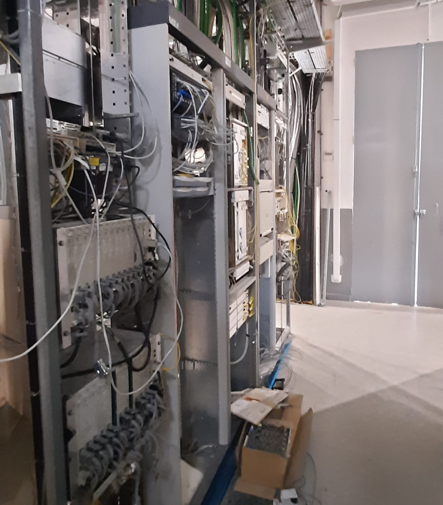
Cablage reseau — Basse-Terre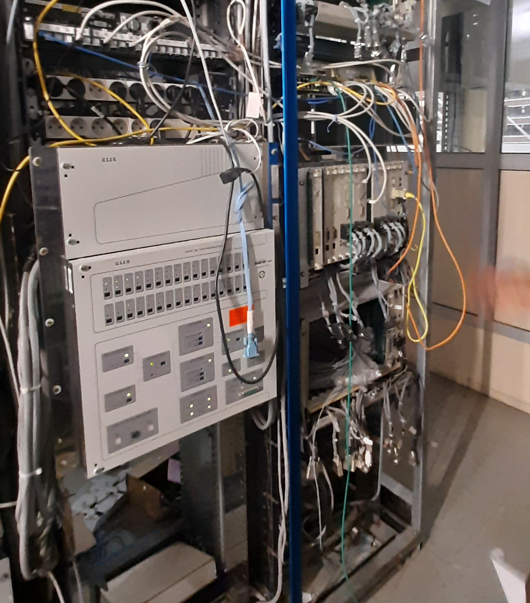
Switch & modem reseauL'équipe SI Digital gère la partie forfait mobile et le SI digital d'Orange Caraibes. Le site est constitué de plusieurs sous-sites interconnectés, chacun avec son interface propre, gérés via des outils internes et des CMS comme Drupal.
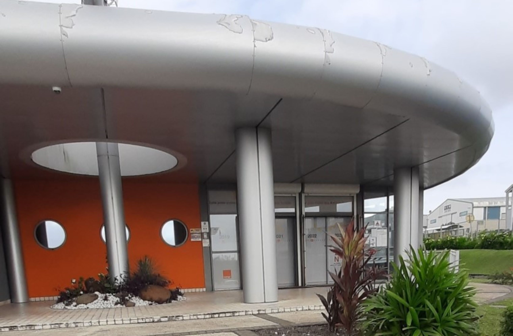
Entreprise de Moudong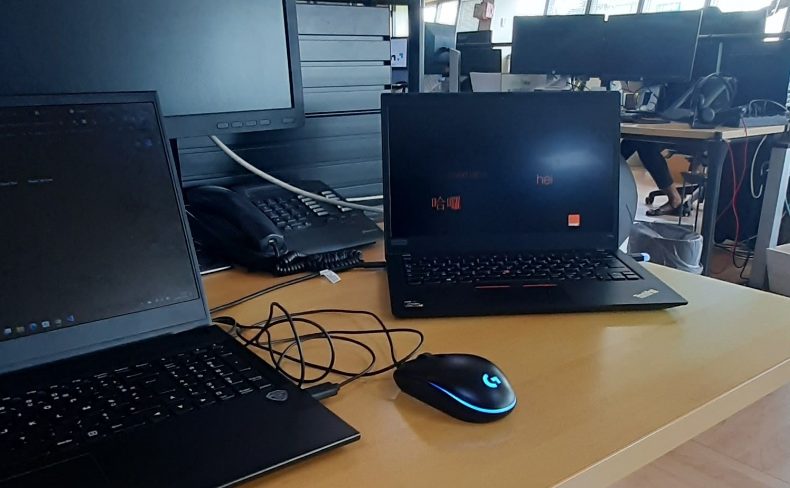
Mon bureau a Moudong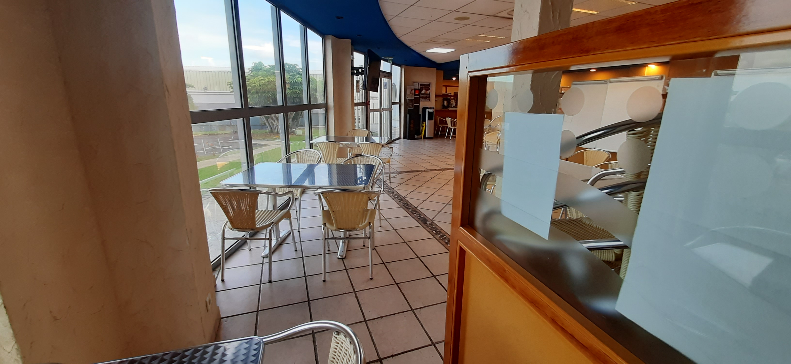
Self de MoudongProjet JO24 — Serie limitee jeunes
Offre mobile ciblant les jeunes Antillais se rendant en France pour les Jeux Olympiques de Paris 2024. Développée entièrement en Java, à finaliser avant juillet 2024.
- Proposition d'algorithmes Java en réunion d'équipe (France + Antilles via Teams)
- Rencontre avec l'équipe marketing pour améliorer la présentation de l'offre
- Testeur principal de l'offre finale
- Problématique résolue : vérification de l'âge réel du client pour éviter la fraude sur la promotion
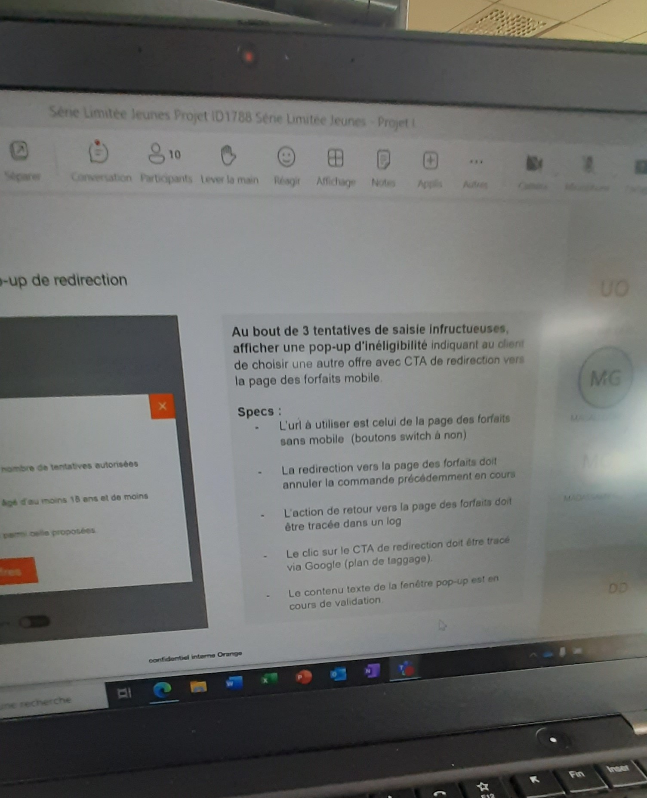
Reunion — Projet serie limitee jeunes JO24Assistance aux reunions
Participation active à plusieurs types de réunions pour proposer des idées et suivre l'avancement des projets digitaux de l'équipe.
- Réunions d'équipe SI Digital
- Réunions avec les fournisseurs d'Orange (EVIDEN et autres ESN françaises)
- Réunions de suivi de projets
Outils utilises
Externes au SI Orange
GitLab
Jira

Teams

Excel
Java
SI interne Orange
Bilan de stage
Ce stage m'a permis d'explorer des domaines très variés — réseaux, développement, marketing, management — dans un grand groupe télécommunication. J'ai pu contribuer à des projets concrets (JO24), travailler en équipe avec des profils différents et intervenir directement sur le terrain. Une expérience enrichissante sur les plans technique et humain.